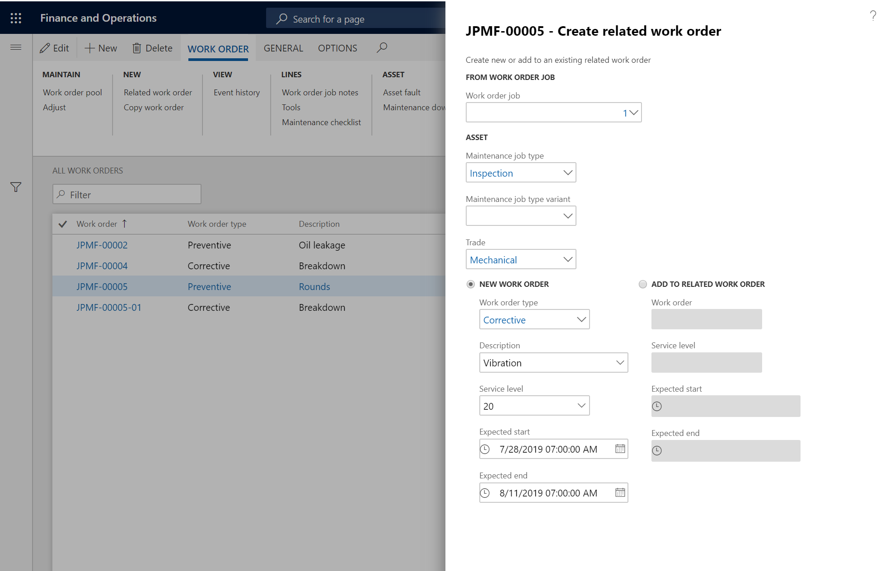
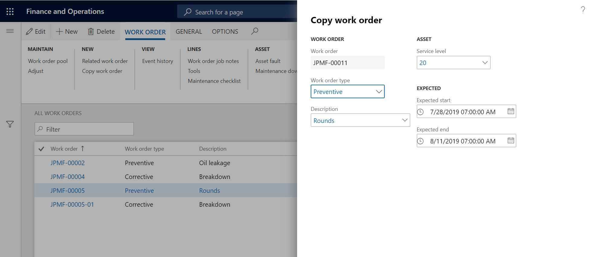
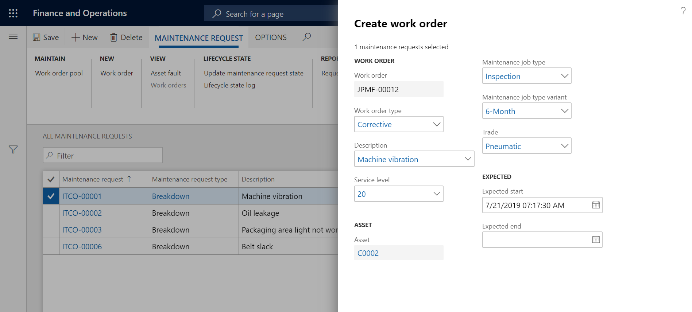

Manuell erstellte Arbeitsaufträge
Important
Dynamics 365 for Finance and Operations hat sich zu speziell entwickelten Anwendungen entwickelt, mit denen Sie bestimmte Geschäftsfunktionen verwalten können. Weitere Informationen zu diesen Änderungen finden Sie im Dynamics 365-Lizenzierungshandbuch.
Sie können Arbeitsaufträge auf zwei Arten manuell anlegen:
- Auf der Seite Alle Arbeitsaufträge oder Aktive Arbeitsaufträge
- Auf der Seite Alle Wartungsanfragen oder Aktive Wartungsanfragen oder Meine Wartungsanfragen für funktionale Standorte
Arbeitsauftrag erstellen
Wählen Sie Anlagenmanagement > Allgemein > Arbeitsaufträge > Alle Arbeitsaufträge oder Aktive Arbeitsaufträge aus.
Wählen Sie Neu aus.
Im Dialogfeld Arbeitsauftrag erstellen wählen Sie einen Arbeitsauftragstyp im Feld Arbeitsauftragstyp aus.
Wählen Sie bei Bedarf eine Beschreibung aus.
Wählen Sie im Feld Anlage die Anlage aus.
Note
Wenn Sie eine Anlage auswählen, sind möglicherweise drei Registerkarten im Dropdown Anlage verfügbar:
- Aktive Anlagen – Diese Registerkarte enthält eine Liste aller Anlagen mit dem Anlagenlebenszyklusstatus „Aktiv“.
- Anlagenansicht – Die Registerkarte enthält eine Strukturansicht der funktionalen Standorte und der Anlagen, die für diese Standorte installiert sind.
- Meine Anlagen – Diese Registerkarte enthält Anlagen, die den funktionalen Standorten zugeordnet werden, denen Sie (die am System angemeldete Arbeitskraft) möglicherweise zugewiesen werden. (Informationen zum Einrichten siehe Wartungsarbeiter und Arbeitskräftegruppen.) Wenn keine funktionalen Standorte für eine Arbeitskraft unter Wartungsarbeiter und Arbeitskräftegruppen eingerichtet werden, ist die Registerkarte Meine Anlagen nicht verfügbar.
Wählen Sie im Feld Wartungsauftragstyp den Wartungsauftragstyp für den Wartungsauftrag aus.
Wählen Sie bei Bedarf Wartungsauftragsartenvariante und Wechseln.
Bei Bedarf können Sie den Servicegrad des Arbeitsauftrags im Feld Service Level ändern.
Wählen Sie in den entsprechenden Feldern das erwartete Startdatum-und das erwartete Enddatum aus.
Klicken Sie auf OK, um den Arbeitsauftrag zu erstellen.
Auf der Listenseite Alle Arbeitsaufträge können Sie den Arbeitsauftrag nach Bedarf bearbeiten.
Beachten Sie die folgenden Punkte:
In der Detailansicht auf der Listenseite Alle Arbeitsaufträge können Sie mehrere Anlagen zu einem Arbeitsauftrag hinzufügen, indem Sie Positionen zu den Wartungsaufträgen im Inforegister Wartungsaufträge für Arbeitsaufträge hinzufügen. In einer Anlage können Sie nur die Wartungsauftragstypen auswählen, die für die für die Anlage ausgewählten Anlagenart definiert sind.
Wenn Sie einen Anlagenservicelevel oder eine Anlagenkritikalität ändern, nachdem Sie die Anlage für einen Arbeitsauftrag verwendet haben, wird der Servicelevel oder die Kritikalität für den Arbeitsauftrag nicht entsprechend aktualisiert. Weitere Informationen zu Service Levels und Kritikalitäten finden Sie unter Asset Service Levels und Asset Kritikalitätsarten.
Die Kritikalität eines Arbeitsauftrags wird jedes Mal neu berechnet, wenn eine Arbeitsauftragseinzelvorgang zum Arbeitsauftrag hinzugefügt oder daraus gelöscht wird.
In der Detailansicht Alle Arbeitsaufträge > Ansicht Leiter > Inforegister Terminplan können Sie in den Feldern Verantwortliche Gruppe oder Verantwortlich eine verantwortliche Wartungsgruppe oder einen verantwortlichen Wartungsarbeiter auswählen. Diese Einstellungen können geändert werden, während der Arbeitsauftrag aktiv ist. Sie können geändert werden, wenn sich der Arbeitsauftragslebenszyklusstatus ändert. Die automatische Auswahl bei der Erstellung von Arbeitsaufträgen basiert auf dem Setup auf der Seite Zuständige Wartungsarbeitskräfte. Wenn Sie Arbeitsaufträge hinzufügen oder entfernen, nachdem Sie einen Arbeitsauftrag angelegt haben, und das Feld Verantwortliche Gruppe und das Feld Verantwortlich bei der Aktualisierung des Arbeitsauftrags leer sind, sucht die Anlagenverwaltung nach einer möglichen Übereinstimmung für eine verantwortliche Wartungsmitarbeitergruppe oder einen verantwortlichen Wartungsmitarbeiter auf der Einrichtungsseite. Wenn das Feld Verantwortliche Gruppe oder das Feld Verantwortlich bei der Aktualisierung des Arbeitsauftrags bereits ausgefüllt ist, werden keine Änderungen vorgenommen. Weitere Informationen über verantwortliche Wartungsarbeiter und Wartungsarbeitergruppen finden Sie unter Zuständige Wartungsarbeitskräfte.
Auf der Seite Wartungsstatus können Sie eine Kalkulation durchführen, um sich einen Überblick über die Auslastung der eingehenden und abgeschlossenen Arbeitsaufträge zu verschaffen.
In der Detailansicht der Seite Alle Arbeitsaufträge auf dem Inforegister Positionsdetails, können Sie die Felder Breite und Länge verwenden, um geografische Koordinaten für die Anlage hinzuzufügen, die für den Arbeitsauftragseinzelvorgang aktiviert ist.
Zugehörigen Arbeitsauftrag erstellen
Sie können einen Arbeitsauftrag erstellen, der zu einem vorhandenen Arbeitsauftrag gehört. Diese Funktion ist z. B. hilfreich, wenn Sie mit primären und sekundären Arbeitsaufträgen arbeiten möchten. Ein neuer Arbeitsauftrag basiert auf einem Arbeitsauftrag aus einem bestehenden Arbeitsauftrag.
Wählen Sie Anlagenverwaltung > Allgemein > Arbeitsaufträge > Alle Arbeitsaufträge oder Aktive Arbeitsaufträge aus.
Wählen Sie den zu erstellenden Arbeitsauftrag aus, für den ein zugehöriger Arbeitsauftrag erstellt werden soll.
Wählen Sie im Aktivitätsbereich, auf der Registerkarte Arbeitsauftrag in der Gruppe Neu die Option Zugehöriger Arbeitsauftrag.
Wählen Sie im Dialogfeld Zugehörigen Arbeitsauftrag erstellen im Feld Arbeitsauftragseinzelvorgang den Arbeitsauftragseinzelvorgang aus, für den Sie einen zugehörigen Arbeitsauftrag erstellen möchten.
Wählen Sie im Feld Wartungsauftragstyp den Wartungsauftragstyp aus.
Wählen Sie in den Feldern Wartungsauftragstypvariante und Art nach Bedarf die Variante und Art aus, die sich auf den Wartungsauftragstyp beziehen.
Wenn dieser Arbeitsauftrag der erste zugehörige Arbeitsauftrag ist, der für den ausgewählten Arbeitsauftrag erstellt wurde, gehen Sie gemäß den folgenden Schritten vor:
- Wählen Sie die Option Neuer Arbeitsauftrag aus.
- Wählen Sie im Feld Arbeitsauftragstyp einen Arbeitsauftragstyp aus.
- Geben Sie im Feld Beschreibung eine Beschreibung ein.
- Ändern Sie bei Bedarf die Leistungsebene des Arbeitsauftrags im Feld Leistungsebene.
- Wählen Sie in den Feldern Erwartetes Anfangsdatum und Erwartetes Enddatum das erwartete Start- und Enddatum aus.
- Wählen Sie OK. Der neue zugehörige Arbeitsauftrag wird in der Listenseite Alle Arbeitsaufträge angezeigt.
Wenn der Arbeitsauftrag, für den Sie diesen zugehörigen Arbeitsauftrag erstellen, bereits zugehörige Arbeitsaufträge hat, führen Sie die folgenden Schritte aus, um einen Arbeitsauftragseinzelvorgang einem vorhandenen zugehörigen Arbeitsauftrag hinzuzufügen:
- Wählen Sie die Option Zu zugehörigem Arbeitsauftrag hinzufügen aus.
- Wähle Sie im Feld Arbeitsauftrag den zugehörigen Arbeitsauftrag aus, dem Sie einen neuen Arbeitsauftragseinzelvorgang hinzufügen möchten.
- Ändern Sie bei Bedarf die Leistungsebene des Arbeitsauftrags im Feld Leistungsebene.
- Ändern Sie in den Feldern Erwartetes Anfangsdatum und Erwartetes Enddatum das erwartete Start- und Enddatum nach Bedarf.
- Wählen Sie OK. Der Arbeitsauftrag wird zu dem bestehenden zugehörigen Arbeitsauftrag hinzugefügt.
Die folgende Abbildung zeigt ein Beispiel für das Dialogfeld Zugehörigen Arbeitsauftrag erstellen.

Note
Wenn Sie eine zugehörige Arbeitsauftragsmaske unter Anlagenverwaltungsparameter > Arbeitsaufträge > Verwandte Arbeitsauftragsmaske eingerichtet haben, werden Arbeitsauftrags-IDs entsprechend dem Maskenaufbau erstellt. Wenn keine zugehörige Arbeitsauftragsmaske eingerichtet ist, wird die nächste verfügbare Arbeitsauftrags-ID für zugehörige Arbeitsaufträge verwendet.
Arbeitsauftrag kopieren
Es ist möglich, schnell einen neuen Arbeitsauftrag aus einem bestehenden Arbeitsauftrag zu erstellen. Diese Art der Arbeit mit Arbeitsaufträgen unterscheidet sich von der Erstellung von Arbeitsaufträgen auf der Grundlage von Wartungsplänen. Dies ist z.B. sinnvoll, wenn Sie ein Arbeitsauftrag viele Arbeitsaufträge enthält, und verschiedene Einzelvorgänge auf verschiedenen Anlagen in regelmäßigen Abständen erledigt werden sollen.
Wählen Sie Anlagenverwaltung > Allgemein > Arbeitsaufträge > Alle Arbeitsaufträge oder Aktive Arbeitsaufträge aus.
Wählen Sie den Arbeitsauftrag aus, aus dem Sie Inhalte kopieren möchten.
Wählen Sie im Aktivitätsbereich > Registerkarte Arbeitsauftrag > Gruppe Neu die Option Arbeitsauftrag kopieren.
Die Einrichtung des Arbeitsauftrags aus dem ausgewählten Arbeitsauftrag wird angezeigt. Bei Bedarf können Sie einige der Felder bearbeiten.
Wählen Sie OK aus, um den neuen Arbeitsauftrag zu erstellen.
Auf der Listenseite Alle Arbeitsaufträge können Sie den Arbeitsauftrag nach Bedarf bearbeiten.
Note
Wenn der neue Arbeitsauftrag erstellt wird, werden einige Informationen direkt aus dem bestehenden Arbeitsauftrag kopiert. Informationen über Planungen, Werkzeuge, Wartungsprüflisten, funktionale Standorte, Adressen und Zeitplanung werden nicht kopiert. Stattdessen werden sie über die aktuelle Einstellung in der Anlagenverwaltung initialisiert. Wenn diese Informationen zwischen dem Zeitpunkt geändert wurden, als erste Arbeitsauftrag erstellt wurde, und dem Zeitpunkt, zu dem Sie eine Kopie des Arbeitsauftrag erstellten, werden die Änderungen in den neuen Arbeitsauftrag einbezogen. Beispiele umfassen Änderungen an den Prognosen und Aktualisierungen von Wartungsprüflisten.
In der folgenden Abbildung wird ein Beispiel des Dialogfelds Arbeitsauftrag kopieren angezeigt.

Arbeitsauftrag basierend auf einer Wartungsanforderung anlegen
Wählen Sie Anlagenverwaltung > Allgemein > Wartungsanfragen > Alle Wartungsanfragen oder Aktive Wartungsanfragen aus.
Wählen Sie die Wartungsanfrage aus, für die Sie einen Arbeitsauftrag anlegen möchten, und klicken Sie auf Bearbeiten.
Wählen Sie im Aktivitätsbereich > Registerkarte Wartungsanfrage > Gruppe Neu die Option Arbeitsauftrag.
Im Dialogfeld Arbeitsauftrag können Sie die Felder festlegen. Wenn in der Wartungsanfrage ein Wartungsauftrag ausgewählt wurde, können Sie beim Anlegen des Arbeitsauftrags bei Bedarf einen anderen Wartungsauftragstyp auswählen.
Wählen Sie OK. Die Nachricht informiert Sie darüber, dass ein Arbeitsauftrag erstellt wurde.
Wenn Sie sehen möchten, welche Arbeitsaufträge mit einer Wartungsanfrage verbunden sind, markieren Sie die Wartungsanfrage auf der Listenseite Alle Wartungsanfragen oder Aktive Wartungsanfragen. Wählen Sie im Aktivitätsbereich auf der Registerkarte Wartungsanfrage in der Gruppe Ansicht die Option Arbeitsaufträge.
In der folgenden Abbildung wird ein Beispiel des Dialogfelds Arbeitsauftrag erstellen angezeigt.

Note
Wenn Arbeitsaufträge automatisch erstellt werden sollen, können Sie Wartungsplanjobs planen oder festlegen, dass Wartungspläne oder Wartungsrunden auf einer Anlage automatisch erstellt werden. Arbeitsaufträge, die aus Wartungsanfragen auf der Listenseite Alle Wartungszeitpläne erstellt wurden, weisen die in den Wartungsanfragen ausgewählten Wartungsauftragsarten auf.